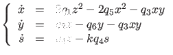

Next: Access to function and Up: The odefile of a Previous: Structure and construction of Contents
If complicated expressions arise several times in the definition of a dynamical system then is
often useful to give them a name.
A simple example is the following system (a catalytic oscillator, (60):
|  | (31) |
z=1-x-y-s x'=2*q1*z^2-2*q5*x^2-q3*x*y y'=q2*z-q6*y-q3*x*y z'=q4*z-k*q4*s
We note that the definition of the auxiliary functions must precede the definiton of the right hand sides.
The corresponding odefile is cataloscill.m in the directory Testruns/TestSystems.